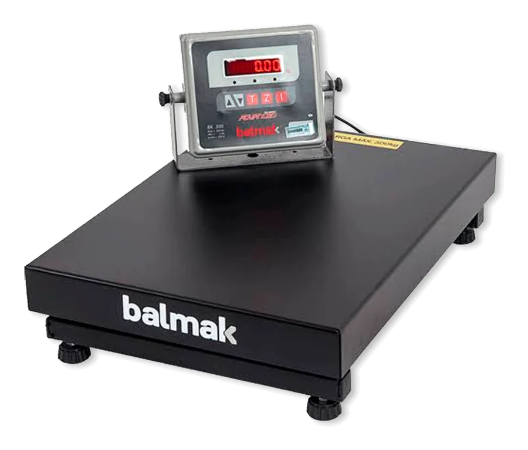

Mede. Calcula. Certifica. Certificado de calibração de balanças em Rio Claro-SP.
NovoCertificado de calibração para a sua balança. Calibramos onde a balança trabalha e entregamos o certificado com erro, incerteza e rastreabilidade: o que a auditoria ISO 9001 e o controle de qualidade pedem.

- PDF assinado digitalmente
- Calibração no local
- 5,0 no Google (56 avaliações)
- Rio Claro-SP e região
- Certificado de calibração
- Erro de indicação
- Incerteza de medição
- Repetibilidade
- Excentricidade
- Rastreabilidade
Para que serve
Quem pede o certificado.
O certificado mostra quanto a sua balança erra e com que segurança. É o documento que a qualidade, os auditores e muitos clientes pedem.
Auditoria ISO 9001
A norma pede medições rastreáveis e com a incerteza conhecida. O certificado mostra as duas.
Controle de qualidade
Peso de produto, dosagem e embalagem conferidos numa balança de erro conhecido.
Pedido do cliente
Quando um cliente ou um contrato pede o certificado das balanças do fornecedor.
Recebimento e expedição
O peso que entra e o que sai conferidos, com registro para mostrar.
Plano de calibração
Um certificado por balança e o aviso quando estiver chegando a hora da próxima.
Depois do conserto
Confirme o desempenho da balança depois de uma manutenção.
Certificado não RBC. Somos um laboratório não acreditado: o certificado não é da RBC (Rede Brasileira de Calibração) e diz isso nele. Ele atende a grande maioria das empresas, inclusive a maioria das auditorias ISO 9001. Se a sua empresa é um laboratório acreditado ou segue uma regra do setor que exige RBC (como algumas normas da Anvisa), fale com a gente antes: conferimos a exigência com você.
O que vem no certificado
Erro, incerteza e rastreabilidade.
Um certificado completo, no formato que os auditores conhecem. Segue a ABNT NBR ISO/IEC 17025 (item 7.8) e o guia EURAMET cg-18 no que vale para um laboratório não acreditado.
- Erro de indicação
- Em vários pontos de carga, do zero até a capacidade máxima da balança
- Repetibilidade
- A mesma carga várias vezes: a balança repete o resultado?
- Excentricidade
- A carga em cada canto do prato: o peso muda com a posição?
- Incerteza de medição
- Calculada para cada ponto, com o fator de abrangência k
- Rastreabilidade
- Pesos-padrão calibrados por laboratório acreditado. Os certificados deles vão junto com o seu
- Condições do ensaio
- Temperatura, umidade e pressão registradas no local
- Autenticidade
- Número e código únicos em cada certificado, com assinatura digital no PDF
- Entrega
- Em PDF assinado digitalmente, por e-mail, pronto para arquivar ou mostrar na auditoria
Como funciona
Do pedido ao PDF.
Quatro passos, sem tirar a balança do lugar. O técnico vai até você com os pesos-padrão.
Pedido
Mande pelo WhatsApp o modelo, a capacidade e quantas balanças são. Se tiver, mande também a exigência do auditor ou do cliente.
Orçamento
Passamos o orçamento e combinamos o dia e o horário que não atrapalham o seu trabalho.
Calibração
Os ensaios são feitos onde a balança trabalha, sem abrir a balança e sem romper lacre.
Certificado
O certificado chega em PDF, assinado digitalmente, por e-mail. E a gente avisa quando estiver chegando a hora da próxima calibração.
Calibração e IPEM-SP
Uma não substitui a outra.
São duas coisas diferentes. A balança que vende por peso precisa da verificação do IPEM-SP em dia, com ou sem certificado de calibração.
Oficina autorizada pelo IPEM-SP. Cuidamos das duas frentes: a calibração com certificado e a manutenção que deixa a balança pronta para a verificação do IPEM.
Perguntas frequentes
Calibração, sem letra miúda.
Ficou alguma dúvida? Mande o modelo da balança ou a exigência do seu auditor pelo WhatsApp. Lacre, conserto e IPEM estão na página de assistência.
Perguntar no WhatsAppNa maioria das auditorias, sim. A ISO 9001 pede medições rastreáveis e com a incerteza conhecida; ela não exige laboratório acreditado. O nosso certificado traz os resultados, a incerteza e a rastreabilidade dos pesos-padrão. Se o seu auditor tiver uma exigência específica, mande para a gente antes.
RBC é a rede de laboratórios acreditados pelo Inmetro. O certificado RBC é exigido em poucos casos: quando a sua empresa é um laboratório acreditado e em alguns setores regulados (por exemplo, certas normas da Anvisa). Fora disso, o certificado não RBC com rastreabilidade atende. Na dúvida, a gente confere a exigência com você antes do serviço.
Não. “Aferição” é o nome antigo da verificação do IPEM-SP, obrigatória para balança de uso comercial. A calibração mostra o erro e a incerteza da balança, com certificado, para o controle de qualidade. Uma não substitui a outra.
Não. A calibração mede e registra o erro, sem abrir a balança. Se ela precisar de ajuste ou conserto, isso é manutenção, feita pela nossa oficina autorizada pelo IPEM-SP, com ordem de serviço. Depois, a calibração mostra como a balança ficou.
Quem define é a sua empresa, pelo uso da balança e pelo risco do processo. Muitas empresas calibram uma vez por ano. A data da próxima só sai no certificado se você pedir, e a gente avisa quando ela estiver chegando.
Balanças de balcão, de bancada, de precisão e de plataforma, de qualquer marca. Balança rodoviária (de caminhão) não. Mande o modelo e a capacidade pelo WhatsApp para a gente confirmar.
Auditoria chegando? Calibre antes.
Mande o modelo e a capacidade da balança pelo WhatsApp e receba o orçamento. Atendemos Rio Claro e região, de segunda a sábado.